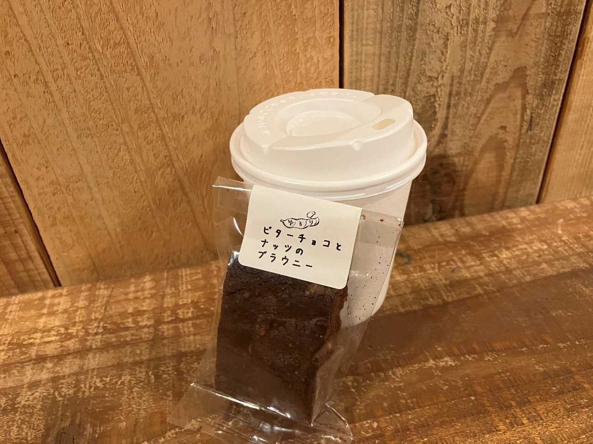

ショートブレッド

・ショートブレッド プレーン 160円
・ショートブレッド ココア 170円
「石窯パン・和みカフェ ゆるり」製造の無添加生地を使用したサクサクのクッキー。
コーヒーとの相性抜群、単体で食べてももちろん美味しい焼き菓子です。
コーヒーカラメルプリン

・コーヒーカラメルプリン 220円(持ち帰り不可)
卵・牛乳・砂糖のみを使用したシンプルなプリンに
ドリップコーヒー入り「コーヒーカラメル」をかけた当店の定番スイーツ。
子供でも食べやすい優しい味わいながら、ほのかにコーヒーが香るプリンです。
ビターチョコとナッツのブラウニー

・ビターチョコとナッツのブラウニー 220円
「石窯パン・和みカフェ ゆるり」謹製、石窯焼きスイーツ。
しっとりとした食感にナッツやクランベリーの味わいも広がります。
甘さは控えめでコーヒーとの相性は言わずもがな、単品でも食べ応え十分なブラウニーです。
(11月～2月限定)かまど焼きいも

・(11月～2月限定)かまど焼きいも 時価
コーヒー豆焙煎後のかまどの余熱でじっくり焼き上げた焼きいも。
シルクスイートや紅はるかを使い、ねっとり甘い焼きいもに仕上げています。
その日の品種と価格は店頭立札をご確認ください。
(7月～9月限定)キリマンジャロアイスキャンディ

・(7月～9月限定)キリマンジャロアイスキャンディ 250円
山頂に雪がかかるキリマンジャロ山をイメージした、手作りアイスキャンディ。
練乳風味の層とカフェモカ風味の層の2層構造となっており、
カフェモカ層にはタンザニアのコーヒーを使用しています。